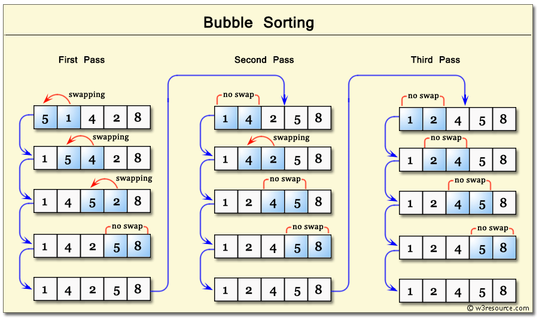

Descrierea metodei: Se parcurge în mod repetat vectorul şi se compară elementele vecine, iar dacă nu sunt în ordine bună se interschimbă .Repetiţia se încheie când nu s-a mai făcut nici o interschimbare.
j=0;
do
{
k=0;
j++;
for(i=0;i<n-j;i++)
if(a[i]>a[i+1])
{
x=a[i];
a[i]=a[i+1];
a[i+1]=x;
k=1;
}
}
while(k==1);

Descrierea metodei: Pornind de la doi vectori ordonaţi după acelaşi criteriu se cere formarea unui al treilea vector cu elementele primilor 2, elementele celui de-al treilea vector fiind de asemenea ordonate.
void interclasare(int a[],int n,int b[],int m,int c[])
{
int i=0,j=0,k=0;
while(i<n && j<m )
if (a[i] < b[j]) c[k++]=a[i++];
else c[k++]=b[j++];
if (i<n)
for(j=i;j<n;j++) c[k++]=a[j];
else
for(i=j;i<n;i++) c[k++]=b[i];
}